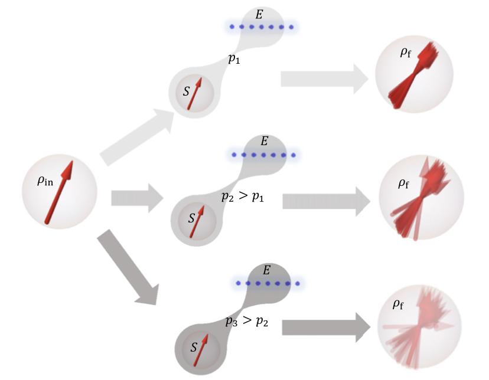
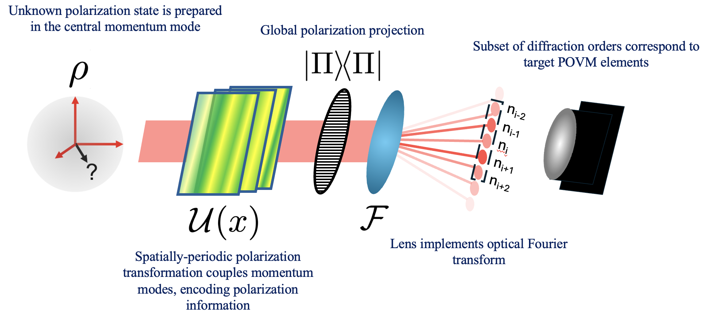

John Grace Physics

You've found my website, welcome! I'm an aspiring physicist with particular interest in quantum information theory and measurement, currently doing my Master's in Physics at ETH Zurich. I study how quantum mechanics mediates not just what we know about physical systems, but also what we CAN know. In this blog, I document some of the things I've worked on, and try to pick out some of what I've learned along the way.
Projects
Optical metasurfaces for the simulation of open-system quantum dynamics

View Paper ↗Optical metasurfaces for quantum state tomography

View Paper ↗Applying machine-learning techniques to the design of phase masks for multi-plane light conversion
Multi-plane light conversion (MPLC) is a technique for transforming the spatial profile and phase of a beam of light, by succesively adjusting the phase point-by-point at multiple planes within the beam's propagation. This works because the adjusted phases serve to change the light's momentum, allowing it to travel between the spots, and eventually find a new configuration. Finding the phase adjustments in each plane, the 'phase masks', is in general a difficult problem with no analytical solution. While numerical methods exist, we've come to a new paradigm for their design through the observation that MPLC as a physical system carries a strong resemblence to a neural network. A 'layer' in neural network is a function: it takes a list of numbers as input and gives a list of numbers back as output. The neural network is the sequence of layers, taking the output of each layer as the input to the next, and generally alternates between two types of layers. The first, is 'activation layer': each number in the input list \(x_i\) is taken to a new number via \(x_i \rightarrow x_i' = f_i(x_i)\). Here, each output only depends on a single input. The activation layer is followed by a ``connected layer'', where each output is some function of all the inputs to the layer: \(x_j' = g_j(x_1, x_2, ...)\). The physical process of MPLC therefore finds a computational analogue in the neural network. Each phase mask applies a phase to the field at each point: \(E_i \rightarrow e^{\mathcal{i}\theta_i}E_i\), in the form of an activation function. Then, the light field travels a distance \(d)\) and the value of the field at each point changes according to the field's momentum: \(E_j' = P^{(d)}_j(E_1, E_2, ...)\), just like a connected layer, where \(P^{(d)}_j\) is the function that calculates the field at position j, given that the field had the values (E_1, E_2, ...) a distance \(d\) away. This correspondence allowed us to implement the MPLC directly as a neural network, and therefore take advantage of the multitude of existing training protocols in the field of machine learning. I turned the code which does this into an installible python package, which one can use to desing MPLC's to implement complex, high-dimensional quantum operations in the light's momentum degree of freedom. You can access it below:
View GitHub Repository ↗